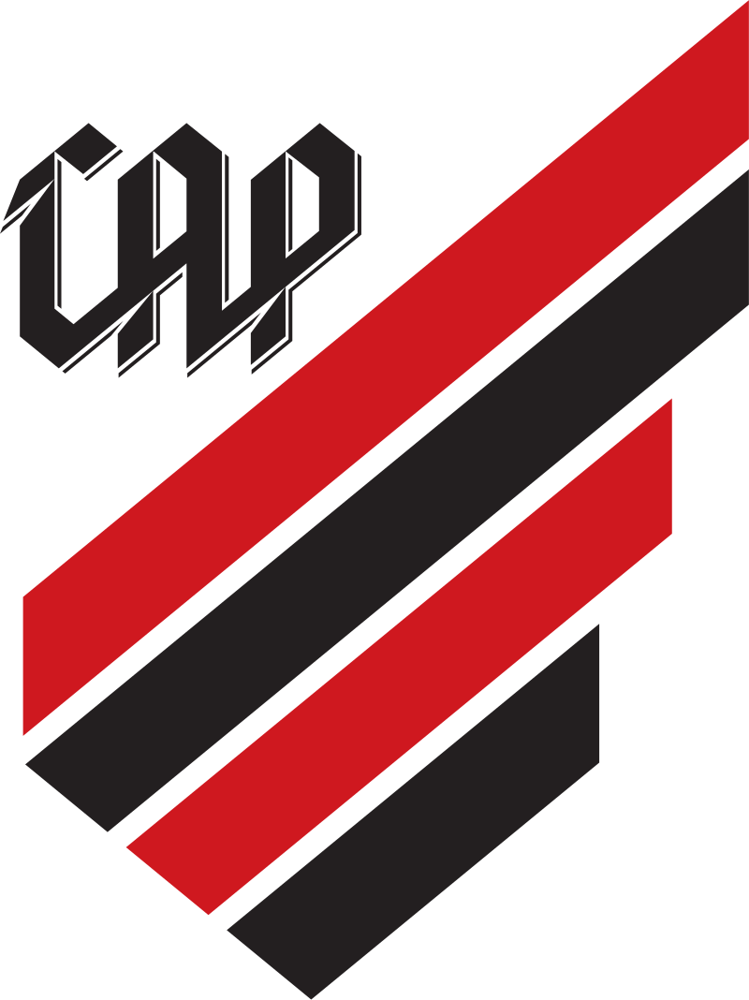

o athleticoparanaense foi fundado em 26 de março de 1924,o time e bicampeao da Sul-Americana,conquistando os titulos em 2018 e 2021, sendo o unico clube do estado a conquistar um campeonato internacional.Além disso, sagrou-se campeão brasileiro em 2001 e levantou a taça da Copa do Brasil em 2019.[7][8] O Athletico também é campeão intercontinental, onde conquistou a Levain Cup, em 2019, após derrotar Shonan Bellmare por um placar de 0x4.
 suas cores tradicionais sao preto e vermelho, isso lhe rende o apelido rubro-negro.anda seus jogos no Estádio Mário Celso Petraglia, mais conhecido como Ligga Arena, que reinaugurado em duas fases: em 1999, após ser totalmente reconstruído; em 2014, após as reformas exigidas pela FIFA para receber os jogos da Copa do Mundo FIFA de 2014.
Dentre seus principais títulos, possui uma Levain Cup-Sudamericana (2019), duas Copas Sul-Americana (2018 e 2021), um Campeonato Brasileiro (2001), uma Copa do Brasil (2019), uma Seletiva para a Libertadores (1999) e outros vinte e oito títulos paranaenses, tendo disputado mais de 4.545 jogos em sua história.[9]
Na somatória de títulos oficiais de abrangência nacional e internacional de clubes brasileiros de futebol, sem contar títulos oficiais de abrangência estadual e regional, em setembro de 2019, o Athletico figurava como o mais vitorioso entre os não-fundadores do Clube dos 13, cujos membros fundadores são frequentemente considerados os maiores times do Brasil, então ocupando a 12ª posição.
Em 1912, Joaquim Américo Guimarães reuniu um grupo de amigos e fundou o International Foot-Ball Club, que tinhas as cores preta e branca no seu uniforme e disputava torneios na baixada da Água Verde. Nos torneios internos organizados pelo Internacional, entravam em campo times secundários, formados por sócios do clube, um desses grupos decidiu dar o grito de independência e, no dia 24 de maio de 1914, fundou o América Futebol Clube que utilizava as cores vermelha e branca, seu primeiro presidente foi o capitão Augusto do Rego Barros. América e Internacional passaram então a disputar partidas amistosas e logo se tornaram adversários também na disputa do campeonato estadual. O Internacional venceu o primeiro, em 1915. O América levantou o troféu em 1917. Entre os irmãos, surgia uma rivalidade com equipes independente até 1924, os dois clubes se fundiram novamente em 21 de março daquele ano, dando origem ao Club Athletico Paranaense (grafia original e de época[14]).[15][16] Vale ressaltar, que a fusão entre Internacional e América, não se deu com todas as facilidades. Sabe-se que o América surgiu de dentro do próprio Internacional, sendo por algum tempo o seu segundo time. Mas cresceu, começou a dar mostras pessoais. A camisa era outra e o fator origens, o fator berço, por um rápido momento passou a deixar de contar. O América virou rival, essa rivalidade na verdade era falsa, pois tudo continuava em casa, inclusive as amizades presentes nas duas bandeiras. As diferenças se davam mais pelo fato de ser outra equipe, embora na pratica nem chegasse a ser outro clube, tal como Coritiba e o Britânia. Encontrava-se, ainda, praticamente na casca. Mas possuía personalidade e isso dava ao América força. Unir as forças de Internacional e América na força da amizade, seria o surgimento de um novo clube imbatível dentro do futebol paranaense, era o que pensava os intelectuais de ambos os lados, reunidos em mesas de café em diversos encontros ponderando sobre a possibilidade. Contudo, não existia unanimidade. Alguns componentes do lado do América, eram frontalmente contrários a fusão, pois imaginavam que seriam totalmente absorvidos pelo Internacional, inegavelmente mais poderoso, e se afastaram, voltando somente após a conclusão da fusão, assegurando que se tratava de um novo clube com cores e bandeiras totalmente diferentes do Internacional.[17]